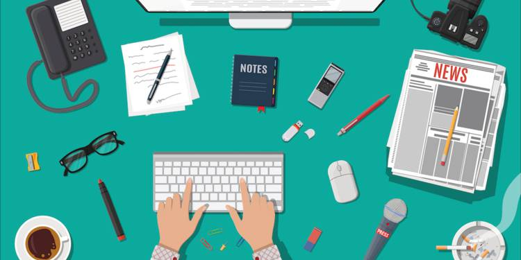

Expert ou pas, aujourd'hui on devine l'impact qu'a le numérique sur notre quotidien. Mais savons nous vraiment de quelle manière le numérique a complétement bouleversé des métiers comme le journalisme?
Dans les années 80, il n'y a pas si longtemps que cela, le journaliste avait pour but de tenir le monde informé grâce à des articles ayant un style d'écriture précis : il avait un rôle d'écrivain. Les reportages nécessitaient une certaine force car on devait transporter des outils qui pesaient lourd pour pouvoir filmer et enregistrer le son. Pour réaliser des vidéos, on utilisait des méthodes demandant du temps et de la précision comme par exemple faire correspondre le son avec l'image à l'aide de fils de rasoir. Agréable, non?

Aujourd'hui les journalistes disposent d'outils performants leur permettant d'enrichir les articles et de créer de nouvelles manières de raconter des informations comme le Webdocumentaire. Ils doivent s'adapter aux nouvelles générations qui utilisent de plus en plus les réseaux sociaux pour s'informer. Twitter est devenu une grande source d'information pour les journalistes mais attention aux fake news! Ils doivent doubler de vigilance et tout vérifier pour être sûrs que l'information est véridique. En plus comme les nouvelles circulent très vite maintenant, ils doivent être de plus en plus rapides pour ne pas écrire un article sur un sujet connu par le monde entier depuis 2 jours, personne ne le lirait...
Malheureusement le numérique n'a pas que de bons côtés pour le journalisme. En effet de moins en moins de personnes lisent le journal papier, préférant les réseaux sociaux ou les articles en ligne. Pourquoi ne pas faire plus d'articles en ligne alors? Eh bien c'est un peu compliqué parce que sur Internet les gens n'ont pas envie de payer... De plus, les journaux font moins de publicité et gagnent moins d'argent. Les journaux papier ont moins de succès, les articles en ligne mènent à la faillite, résultat: chaque année, ce secteur perd beacoup de journalistes et il n'attire plus autant de jeunes...